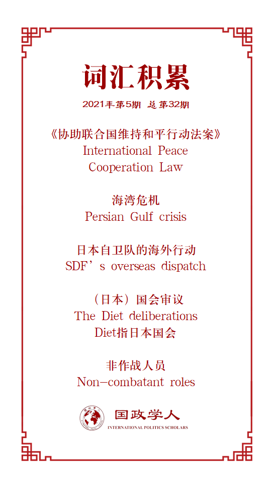

收录于合集

作品简介
【作者】 Bhubhindar Singh，现担任新加坡南洋理工大学拉惹勒南国际关系学院（RSIS）副教授，研究生项目办公室负责人。他是富布赖特奖的获得者，并曾在乔治华盛顿大学、东京大学、日本中央大学和日本国防研究所担任访问学者。主要研究领域为东北亚国际关系与日本的安全政策。
【编译】 王嘉许（国政学人编译员，复旦大学国际政治系）
【校对】 谢菁
【审核】 赵雷
【排版】 余姣
【美编 】游钜家
【来源】 Bhubhindar Singh, Peacekeeping in Japanese Security Policy: International–Domestic Contexts Interaction, European Journal of International Relations , Volume 17, Issue 3, September 2011, Pages 429–451.
【归档】 《国际关系前沿》2021年第5期，总第32期。
期刊简介
《欧洲国际关系杂志》（ European Journal of International Relations, EJIR）是欧洲政治研究联盟国际关系常设小组（the Standing Group on International Relations of the European Consortium for Political Research, SGIR）的同行评审旗舰期刊, 由SGIR和欧洲国际研究协会组成的联合委员会共同管理。根据Journal Citation Reports显示，2019年该期刊的影响因子为3.474。
**** 日本安全政策中的维和行动：国际-国内背景的相互作用
Peacekeeping in Japanese security policy: International–domestic contexts interaction
Bhubhindar Singh
内容提要
本文从国际- 国内背景相互作用的视角分析了20世纪90年代初维和行动是如何成为日本的一种政策选择以及国家安全叙述的一部分。日本加入维和行动是1990年代初国际社会将集体安全确立为规范，以及日本国内政治中修正主义者再度回归的结果。这一群体接受了集体安全作为国际规范，并在国内推动维和政策，以期扩展冷战后日本安全政策的版图。
【关键词】 建构主义，文化，日本，规范，维和行动
文章导读
冷战结束后，日本安全政策的版图不断扩张。一方面，日本在1992年通过《协助联合国维持和平行动法案》（IPCL）后确立了维和行动合法性，这一法案使得日本可以派遣自卫队参与经由联合国授权的维和行动（UNPKOs）。另一方面，日本将日美安保合作进一步制度化，深化并扩展了自卫队的职能。
日本国内对于自卫队参加维和行动的争论始于20世纪50年代末。对保守主义者来说，维和行动被视为提升日本对国际安全贡献的最佳手段，也最不容易引发争议，但直到冷战结束才被确立下来。IPCL的通过为日本向海外派遣自卫队创造了法律框架。在1992年首次成功参与柬埔寨行动后，海外派遣自卫队的次数不断增加，地理范围扩大，任务也变得更为复杂。正如IPCL所示，日本军队的部署已不再局限于冲突已经停止的地区，而是扩展到了武装冲突中的地区。这些维和行动的成功促使日本政府考虑通过一项永久性法律，授权自卫队参与范围更广、甚至是非联合国授权的任务。
基于上述变化，本文旨在回答两个相互联系的问题：维和行动是如何被日本决策精英纳入选择范围的？又是如何最终被确立为日本的一项政策的？
对这些问题的回答将以国际国内背景的互动为基础。这里的国际背景指的是在某一个特定时段内支配国家间关系的主要规范，突显了各国为维持国际环境和平而做出的政策选择。本文中的国内背景指的是执政者解释国际规范并将其纳入国内议程的决策行动。在冷战结束后，国际结构是由集体安全准则（即为维护全球和平承担责任并做出军事贡献）界定的，这种安全文化使得维和行动成为各国的安全政策选项。在日本国内，修正主义者（试图扩大日本安全政策范围的群体）则开始成为主导势力。简而言之，日本之所以采取维和行动作为其安全政策，是源于20世纪90年代初期，国际背景的集体安全文化与国内背景的修正主义者复兴之间的相互作用。
从概念上来说，本文的研究方法克服了现有日本安全政策研究的弱点，并非只关注国际层面（从冷战时期到冷战后国际体系的转型与东亚均势的变化），或国内层面（日本经济的衰退、民族主义与反军国主义文化的激增），而是从国际国内互动的视角解释日本冷战后安全政策的变化。
本文的论述分为三个部分。第一部分与第二部分分别讨论国际规范与国内领导，形成本文的理论路径。最后一部分阐释了国际与国内背景的相互作用，并最终使得日本将维和行动纳入安全议程、通过1992年《协助联合国维持和平行动法案》的过程。
01
国际文化：集体安全的社会安排
国际安全环境可以用多种文化进行分类。本文采用Frederking的理论，将国际安全环境分为战争、竞争、集体安全和安全共同体。其中，集体安全建立在几条基本的社会结构规则上：
1.具有共同的公民身份
2.国家自主权受到共同体规则的限制
3.安全建立在对于使用军事力量的多边承诺上
**
**
4.不违反共同体的规则
5.违反规则的会受到惩罚
6.使用武力有时是必要的
对日本而言，冷战结束前后的国际环境发生了巨大的变化，从冷战时期的竞争转变为了冷战后更为复杂的、竞争与集体安全兼有的模式。在东亚地区，从冷战结束到1994年朝核危机爆发前，各国对国际环境的和平前景持有不确定但乐观的态度，此时集体安全已经取代竞争成为了占主导地位的规范。
集体安全
在这一阶段，冷战时期的安全格局出现变化，与威胁相关的概念也被国际社会重新探讨。通过集体安全来解决国际军事争端的概念取代了冷战时期单极格局，而国际社会也更依赖多边组织来解决国家间的争端，联合国成为了国际关系中的一个主要行为体。这些发展构建了一个全新的全球治理体系，而对其发起挑战的则会受到惩罚，正如1990-1991年海湾危机中表现出来的那样。此外，与和平相关的国际规范，例如与人权和人道主义干预相关的规范，得到了广泛传播，并长久存在于大部分国家的安全议程中。
作为这种集体安全规范的结果，维和行动重新回归了全球安全治理体系，成为了国家维持国际秩序稳定的普遍策略，同时也成为了冷战结束后的全球文化。在这一过程中，有两种国际规范逐步得到了强化：
第一，联合国成员国之间共同承担维持全球和平、解决国际争端的责任。
第二，国家不能仅提供经济援助，而需要对争端的多边解决做出军事贡献。
在上述规范的作用下，日本过去作为“安保部队”的角色得到了逆转，国内对于向海外派遣军队的反对也出现松动。这导致日本自卫队的职能得以扩展到以维和为目标的海外任务，而军事机构的地位也从社会的边缘向中央靠近，防卫事务成为了核心话题。
02
国内领导者：
“修正主义者”的崛起
国内领导者受到能重塑国家利益的国际规范影响，从而制定新的安全政策。需要注意的是，国际与国内背景的关系并非单向的（国际体系影响国家），而是双向建构的（体系与国家相互定义）。国内政策并不会完全受到国际体系的结构性影响，而是取决于国家如何回应这种来自体系的压力。
修正主义者依靠权力政治来制定保护日本的政策。他们号召在国内约束之外强化军事实力，在不断挑战宪法第9条的同时表明可以通过重新解释宪法来达到上述目的。这一群体自中曾根时期以来回归主流政治，在冷战结束后这一趋势则更为明显。首先，日本左翼党派无法适应冷战后国际安全环境出现的变化，势力在1995年出现显著衰退，社会党党首村山富市甚至推翻了该党长期以来的纲领，宣布支持美日安保同盟与自卫队的合法性。其次，日本自民党内部的权力平衡也转向了修正主义者一方。自民党保守阵营中的实用主义者在日本国内政治中也出现了与左翼政党相同的问题，作为整体的政治地位下降。
由此，修正主义者开始将冷战后的体系性压力视为实现自己修宪目标的机会，想借此在地区与国际安全中承担更为积极主动的角色。 为实现这一目标，他们致力于提升日本军队的存在感，作为推行防卫政策的工具，并改变美日安保关系的不平等局面。而且，为回避国内社会与法律上的约束，这些修正主义者始终依靠着外部“刺激”来为日本制定替代性的安全政策，而国际规范便是“刺激”之一。
03
日本的维和政策：
国际国内背景的互动
本节概述了日本在冷战结束后是如何利用上述国际-国内背景的互动来采取维和政策的。
国际背景
从冷战时期到冷战后，国际体系不仅发生了权力分配的变化，更出现了一种思想上的转变，新的社会结构与治理机制应运而生，促进全球安全事务向和平演进。国际环境从竞争文化向集体安全文化的转变为冷战后的第一届日本政府（海部俊树）创造了历史性机会，使其可以将安全政策拓展至以ODA援助为中心的经济外交以外。尽管在形式上还存在不确定性，但日本政府从一开始就表明，该国赞成从维护区域与国际和平入手来扩展其在安全领域的作用。
20世纪90年代初的集体安全文化从两个方面对日本国内施加了压力。 一方面，联合国成员需要在安全领域承担责任的准则挑战了日本战后经济与政治分离的战略，以及由此产生的、不主动参与国际安全事务的国内准则。 日本领导人意识到，原有的安全政策过于局限，与冷战初期的新安全文化不符。日本没有再像冷战时那样退居幕后，而是通过阐明自身利益并对维护安全秩序做出贡献来彰显自己作为国际社会成员的身份。正如1991年《日本外交蓝皮书》所言，日本的外交政策正处于一个转折点，且日本如今几乎能够影响与建立国际新秩序有关的所有问题。
另一方面，在共同承担责任的准则之外，日本的行为还受到军事准则的影响，需要对解决全球安全问题的多边努力做出军事贡献。 这一规范需要单独列明，因为正是这个国际因素才让日本将海外军事部署纳入了安全议程。关于多边军事合作、集体安全以及通过维和行动做出军事贡献的概念对国内占据政治领导地位的修正主义者有很高的吸引力，因为这些规范可以让他们在不违背《和平宪法》的前提下实现目标。
国内背景
与国际背景的转变相吻合的是，日本国内也经历了“政权更迭”。自从回归主流以来，修正主义者在安全领域的影响力有所增强，依靠国际准则改变了日本的安全政策。如前所述，由集体安全环境所界定的国际准则通过海湾危机中日本的艰难处境被转载到了国内议程中。
海湾危机迫使决策层就日本如何参与科威特战争并发挥多边安全作用展开辩论。虽然当时日本的反应是在1991年4月武装冲突结束后向波斯湾派遣扫雷人员，但日本领导人也开始就长期的政策展开讨论。修正主义者（在美国的支持下）开始主导这一进程，并成功地获得了海部、宫泽两任首相与中间派的支持，将自卫队的海外派遣提交给国会审议。最终的结果是，日本采取了参与联合国多边行动作为其安全政策，其合理性也受集体安全规范的影响不断加强。这一决策的原因有三个：第一，自日本1956年加入国际机构以来，联合国一直是日本在国际社会的合法性来源，也是日本展现其安全目标与和平原则的重要媒介。第二，日本是联合国的成员，这意味着它有责任根据《联合国宪章》第51条维护国际环境的和平。修正主义者认为，日本参与联合国主导的维和行动是符合宪法的，因为《联合国宪章》第2条中也有与《和平宪法》第9条相似的内容，要求放弃武力。第三，与联合国挂钩可以缓和二战时期受日本侵略的亚洲国家的担忧，并安抚在冷战结束后仍渴望维持美日安保体系的日本公民。
修正主义阵营曾两次试图通过法律框架将参与维和行动制度化，作为日本安全议程的组成部分。第一次尝试是1990年10月的《联合国和平合作法》，寻求向海湾地区授权部署轻武装自卫队，进行非军事活动。
在几个月的激烈辩论与日本共产党的巨大阻力下，1992年自民党、公明党与民主党达成了三边协议，IPCL最终成为了第一个授权向海外派遣自卫队与其他作战人员参与国际和平行动的法律框架。此后，日本不再依靠传统的经济援助和外交举措，在柬埔寨的冲突中直接参与争端解决与国家重建，并做出了显著的军事贡献。参加了诸多维和行动之后，民间团体与反对党的抵制已经显著减少，维和已然成为了日本安全议程的特征，也成为了其促进地区与国际安全环境稳定的重要手段。
04
总结
本文通过国际- 国内互动的研究框架分析了促使日本将维和行动纳入安全政策的条件。在冷战结束早期，国际结构受到集体安全规范定义，维和行动重新变为各国主要的国防（安全）政策选项。而同期，修正主义在日本国内重新占据主流，使得维和行动成为日本扩大安全版图的起点。本文从三个角度讨论了维和行动对于理解日本安全政策的作用：第一，参与维和行动使得日本的身份从和平国家变为了“国际国家”（international state）。日本政治精英的信心从而得到强化，转化为进一步提升日本国际安全角色、谋求“入常”的新运动。第二，维和政策是日本为自卫队确立新安全角色的关键催化剂，即，将自卫队的定位合法地从国家防卫扩展到国际维度，使其可以在外国领土上执行任务，并与其他国家合作以恢复全球和平。最后，实施维和政策的准备阶段颠覆了日本作为“反应性国家”（reactive state）的特性。虽然日本没有直接在军事战略上对战后国际结构做出挑战，但它也并不是规范的被动“参与者”。正如本文所示，日本国内政治体制中修正主义政治家的出现表明其不仅愿意参与维护全球和平，也愿意解决国际危机，在冷战后全球性趋势的变化中拥抱占主导地位的国际规范，帮助日本在全球安全事务中承担责任。
译者评述
在海湾战争时期，日本向以美国为首的多国部队提供了90亿美元的巨额资金，却并未获得与其贡献相称的国际认可，被称为“只出钱不出力”的支票外交。这一事件直接推动了1992年《协助联合国维持和平行动法案》的通过，使日本自卫队的海外行动成为可能。Bhubhindar Singh以建构主义为理论框架，分析了日本在20世纪90年代将维和行动纳入安全政策的全过程。从中曾根内阁提出“战后政治总决算”起，日本国内的修正主义者就开始在党派竞争中占据上风。在感知到冷战后国际体系的变化后，这些决策精英重新定义了国家利益与安全议程。这一过程既可以理解为国内政治对于集体安全压力的自然回应，也可以解读为持修正主义观点的日本政治家把握住了国际体系多极化的机会，借助联合国这一兼具权威性与合法性的多边平台，推行自身的政策主张，为日本的国家正常化铺平道路。
词汇整理

文章观点不代表本平台观点，本平台评译分享的文章均出于专业学习之用, 不以任何盈利为目的，内容主要呈现对原文的介绍，原文内容请通过各高校购买的数据库自行下载。
好好学习，天天“在看”
国政学人
支持学术公益与知识传播
微信扫一扫赞赏作者 __赞赏
已喜欢，对作者说句悄悄话
取消 __
发送给作者
发送
最多40字，当前共字
上一页 1/3 下一页
长按二维码向我转账
支持学术公益与知识传播
受苹果公司新规定影响，微信 iOS 版的赞赏功能被关闭，可通过二维码转账支持公众号。